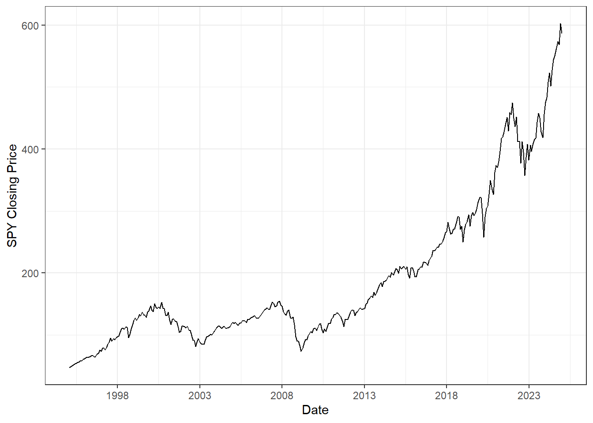
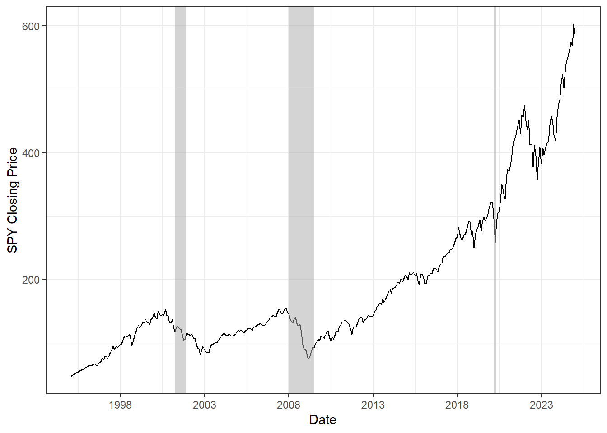

# Load Libraries [i.e., packages]
library(dbplyr)
library(RPostgres)
library(DBI)
library(glue)
library(arrow)
library(haven)
library(tictoc) #very optional timer, mostly as a teaching example
library(tidyverse) # I like to load tidyverse last to avoid package conflicts
#I have done this in a separate chunk with the options
# results: FALSE
# message: FALSE
#because I don't need to see the messages from loading the packages. 3 Obtaining and Merging Data
This is my first time working on a Quarto book. So, this first post will be very rough for now. I will try to provide a few different examples of ways to obtain and merge data in R, and a few tips of things to keep in mind.
We already know how to obtain data from WRDS. Let’s use this to obtain some returns for the S&P 500. We could use the formal index data, but let’s take a shortcut and just use the popular SPY ETF that tracks the S&P 500. To do this, we need to find the CRSP identifier (PERMNO) for the ticker “SPY.” We can look in the WRDS stocknames file for this, and then use the SPY PERMNO to pull data from the CRSP monthly stock file.
# Log in to WRDS -------------------------------------------------------------------
#before running this block, I used these commands to securely store my WRDS username and password:
# keyring::key_set("WRDS_user")
# keyring::key_set("WRDS_pw")
if(exists("wrds")){
dbDisconnect(wrds) # because otherwise WRDS might time out
}
wrds <- dbConnect(Postgres(),
host='wrds-pgdata.wharton.upenn.edu',
port=9737,
user=keyring::key_get("WRDS_user"),
password=keyring::key_get("WRDS_pw"),
sslmode='require',
dbname='wrds')
# Create WRDS Table References -------------------------------------------------
crsp.msf <- tbl(wrds,in_schema("crsp","msf"))
stocknames <- tbl(wrds,in_schema("crsp","stocknames"))
#I am collecting this data locally to play with duplicates
spy_permnos <- stocknames |> filter(ticker == "SPY") |> collect() Notice that there are six observations in the stocknames table that all share the same ticker “SPY.” I am going to use this as a toy example to play with duplicates. My goal is for this data to be unique at the level of ticker-permno links. First, I can check whether this is true.
#check whether there are duplicates
#this simple logic is useful in general
#group by the level I want to make unique,
#count within each group
#sort by descending count so that if there are duplicates
#they will show up at the top.
spy_permnos |>
group_by(ticker,permno) |>
count() |>
arrange(-n)# A tibble: 3 × 3
# Groups: ticker, permno [3]
ticker permno n
<chr> <int> <int>
1 SPY 84398 3
2 SPY 33910 1
3 SPY 60716 1There are multiple permnos connected to the SPY ticker and some duplicate entries for permno 84398 so I better just look at the data. Also this tells me that there are only a few rows so it doesn’t hurt to just print the data.
#| #note that we can use the kable commmand to embed a simple table in the quarto document
knitr::kable(spy_permnos)| permno | namedt | nameenddt | shrcd | exchcd | siccd | ncusip | ticker | comnam | shrcls | permco | hexcd | cusip | st_date | end_date | namedum |
|---|---|---|---|---|---|---|---|---|---|---|---|---|---|---|---|
| 33910 | 1962-07-02 | 1966-05-24 | 10 | 2 | 2893 | NA | SPY | SPEEDRY CHEMICAL PRODS INC | A | 2751 | 3 | 55914210 | 1962-07-02 | 1979-01-22 | 2 |
| 60716 | 1978-10-03 | 1987-07-01 | 10 | 1 | 3811 | 84756710 | SPY | SPECTRA PHYSICS INC | NA | 4215 | 1 | 84756710 | 1972-12-14 | 1987-07-01 | 2 |
| 84398 | 1993-01-29 | 2009-02-23 | 73 | 2 | 6726 | 78462F10 | SPY | SPDR TRUST | NA | 46699 | 4 | 78462F10 | 1993-01-29 | 2024-12-31 | 2 |
| 84398 | 2009-02-24 | 2010-01-26 | 73 | 4 | 6726 | 78462F10 | SPY | SPDR TRUST | NA | 46699 | 4 | 78462F10 | 1993-01-29 | 2024-12-31 | 2 |
| 84398 | 2010-01-27 | 2024-12-31 | 73 | 4 | 6726 | 78462F10 | SPY | SPDR S & P 500 E T F TRUST | NA | 46699 | 4 | 78462F10 | 1993-01-29 | 2024-12-31 | 2 |
Looking at the data, the company name for permno 84398 matches the SPDR S&P 500 ETF I am looking for. It looks like the duplicate entries might have to do with a change in the listing exchange for the ETF (exchcd) and then a slight name change in 2010 to make the name of the trust more descriptive. Let’s keep using this toy example to demonstrate some other functions for dealing with duplicates:
#if I want to just collapse the duplicates, I can use "distinct" across the groups that I care about
spy_permnos |>
select(ticker,permno) |>
distinct()# A tibble: 3 × 2
ticker permno
<chr> <int>
1 SPY 33910
2 SPY 60716
3 SPY 84398Now there are only three observations,which is what I asked for, but sometimes it might matter which of the duplicate observations I keep. For example, perhaps what I should do is keep the most recent observation from the spy_permno dataset, in terms of nameenddt.
#select the max data within each group as more advanced way to keep one obs per
#group
spy_permnos |>
group_by(ticker,permno) |>
filter(nameenddt==max(nameenddt))# A tibble: 3 × 16
# Groups: ticker, permno [3]
permno namedt nameenddt shrcd exchcd siccd ncusip ticker comnam shrcls
<int> <date> <date> <int> <int> <int> <chr> <chr> <chr> <chr>
1 33910 1962-07-02 1966-05-24 10 2 2893 <NA> SPY SPEEDR… A
2 60716 1978-10-03 1987-07-01 10 1 3811 84756710 SPY SPECTR… <NA>
3 84398 2010-01-27 2024-12-31 73 4 6726 78462F10 SPY SPDR S… <NA>
# ℹ 6 more variables: permco <int>, hexcd <int>, cusip <chr>, st_date <date>,
# end_date <date>, namedum <dbl>#ultimately we can assign the permno of the current observation, which we already know from manually checking is the correct permno, 84398
spy_permno <- spy_permnos |>
group_by(ticker,permno) |>
filter(nameenddt==max(nameenddt)) |>
ungroup() |>
filter(nameenddt==max(nameenddt)) |>
select(permno) |>
as.numeric()
spy_permno[1] 84398Now we can use the SPY permno to pull monthly returns for SPY:
# Pull CRSP MSI Data -----------------------------------------------------------
#Data seems to begin in feb 1993, lets start in 1995 as a nice round number
#notice that this implicitly feeds the permno I calculated locally back up to WRDS in my crsp query.
mkt_index <- crsp.msf |>
filter(date >= "1995-01-01",
permno == spy_permno) |>
select(date,ret,prc) |>
collect() |>
mutate(month = month(date),
year = year(date))Then I can plot them, note that if you look at the source code for this page, I do this in a chunk with echo=false so that I only see the output and not the code. This would be useful for creating an actual paper rather than coding examples:

This plot would look nice with recessions shaded. We can get recession dates from FRED. FRED data can be accessed from an API, there is a custom package to work with FRED data in R called fredr. First you need to obtain a FRED API key by signing up here: https://fred.stlouisfed.org/docs/api/api_key.html
#load the fredr package
library(fredr)
#Unblock the below and run to set your password
#keyring::key_set("fred_api_key")
#set my API key which is saved in keyring
fredr_set_key(keyring::key_get("fred_api_key"))
#collect the data from the series USRECD
# https://fred.stlouisfed.org/series/USRECD
fred_data<-fredr(series_id = "USRECD",
observation_start = as.Date("1995-01-01"),
observation_end = as.Date("2024-12-31"),
frequency = "m") |>
#I am going to add month and year variables because I think this is
#easier for linking
mutate(month = month(date),
year = year(date))
# show the first few rows which has a value of 0 or 1 where 1 is recession
fred_data |> head() |> knitr::kable()| date | series_id | value | realtime_start | realtime_end | month | year |
|---|---|---|---|---|---|---|
| 1995-01-01 | USRECD | 0 | 2025-03-12 | 2025-03-12 | 1 | 1995 |
| 1995-02-01 | USRECD | 0 | 2025-03-12 | 2025-03-12 | 2 | 1995 |
| 1995-03-01 | USRECD | 0 | 2025-03-12 | 2025-03-12 | 3 | 1995 |
| 1995-04-01 | USRECD | 0 | 2025-03-12 | 2025-03-12 | 4 | 1995 |
| 1995-05-01 | USRECD | 0 | 2025-03-12 | 2025-03-12 | 5 | 1995 |
| 1995-06-01 | USRECD | 0 | 2025-03-12 | 2025-03-12 | 6 | 1995 |
Now we need to merge the SPY data with the recession data.
merged_data <- mkt_index |>
#I am going to select only the columns I need from #the FRED data
inner_join(fred_data |>
select(month,year,recession=value),
by=join_by(month,year))
# check to make sure it is still unique by month
merged_data |>
group_by(month,year) |>
count() |>
arrange(-n)# A tibble: 360 × 3
# Groups: month, year [360]
month year n
<dbl> <dbl> <int>
1 1 1995 1
2 1 1996 1
3 1 1997 1
4 1 1998 1
5 1 1999 1
6 1 2000 1
7 1 2001 1
8 1 2002 1
9 1 2003 1
10 1 2004 1
# ℹ 350 more rowsNow we can make the plot with shades for recession months
#turns out the merged data was not the preferred way to do this kind of plot
#here is some code I found online to reshape the recession data and add it to the plot
#rename/assign fred data to recession because
#that was the name in the example I found
recession<-fred_data
#load a package they used
library(ecm)
#reshape the recession data for the way
#geom_rect likes the data shaped
recession$diff<-recession$value-lagpad(recession$value,k=1)
recession<-recession[!is.na(recession$diff),]
recession.start<-recession[recession$diff==1,]$date
recession.end<-recession[recession$diff==(-1),]$date
if(length(recession.start)>length(recession.end))
{recession.end<-c(recession.end,Sys.Date())}
if(length(recession.end)>length(recession.start))
{recession.start<-c(min(recession$date),recession.start)}
recs<-as.data.frame(cbind(recession.start,recession.end))
recs$recession.start<-as.Date(as.numeric(recs$recession.start),origin=as.Date("1970-01-01"))
recs$recession.end<-as.Date(recs$recession.end,origin=as.Date("1970-01-01"))
#look at the reshaped data
recs recession.start recession.end
1 2001-04-01 2001-12-01
2 2008-01-01 2009-07-01
3 2020-03-01 2020-05-01#plot the new plot with recession bars
merged_data |>
ggplot(aes(x=date,y=abs(prc))) +
geom_line() +
scale_x_date(name = "Date",
date_breaks= "5 years",
date_labels = "%Y") +
scale_y_continuous(name = "SPY Closing Price") +
geom_rect(data=recs, inherit.aes=F,
aes(xmin=recession.start, xmax=recession.end, ymin=-Inf, ymax=+Inf),
fill="darkgrey", alpha=0.5)+
theme_bw()